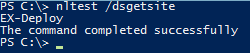
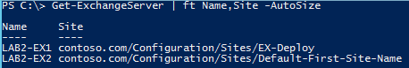
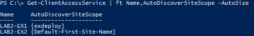

(この記事は 2015 年 11 月 18 日に Office Blogs に投稿された記事 Exchange Active Directory Deployment Site の翻訳です。最新情報については、翻訳元の記事をご参照ください。)
新しい Exchange サーバーを導入するときは、考慮すべきことがいくつかあります。そのうちの 1 つが、現在サポートされている新しいバージョンの Exchange サーバーを稼動中の運用環境に導入するときに、Active Directory (AD) 展開のサイト設計オプションを活用すると作業がスムーズになるという点です。
クライアント アクセス サーバー ロールを持つ新しい Exchange サーバー、またはすべての Exchange 2016 サーバーを導入するときは必ず、セットアップ プロセスで Active Directory 内に新しいサービス接続ポイント (SCP) (英語) レコードが追加されます。内部ドメインに参加しているクライアントおよびアプリケーションが自動検出 (英語) サービスを見つけるためにSCP レコードを使用します。実際の環境の構成内容によっては、新しいサーバーを構成する前に、クライアントがこの新しい SCP レコードを参照し、そのサーバーに自動検出要求を直接送信し始める可能性があります。しかし、既定の自己署名証明書はクライアントから信頼されていないため、この新しいサーバーとやり取りするすべてのクライアントで、エンド ユーザーに証明書のエラーが表示されるようになります。この最良とは言えないエクスペリエンスは簡単に防ぐことができます。
クライアントがこの新しいサーバーに自動検出要求を直接送信するのを回避するために、皆様は既に、新しい SCP レコードの AutodiscoverServiceInternalUri 値を「空白のまま」にしているか、扱いやすく負荷分散される URL に設定しているかもしれません。この設定によって、クライアントは SCP をまったく使用しないようになるか、使用するとしても、有効な証明書を既に備えているロード バランサーへと向けられます。いずれの方法でも、新しいサーバーを構成するまで、クライアントはそのサーバーに自動検出要求を直接送信しなくなりますが、この時点ではまだ問題は解決されていません。クライアントからサーバーへの自動検出要求の送信は、自動検出に関する問題の 1/2 にすぎません。ほかに、自動検出応答がクライアントに返される前に、それがどのように生成されるかを考慮する必要があります。
重要なのは、自動検出要求を受信するサーバーが、単に自身の設定を使用して応答を作成するのではないということです。つまり、要求を受信するサーバーは、ユーザーのメールボックスのバージョンや、ユーザーのメールボックスが現時点で属している Active Directory サイト、使用しているクライアントの情報、ユーザーのメールボックス サイトがインターネットに接続されているかどうかを確認します。サーバーは必要な情報をすべて揃えると、次に、自動検出応答の作成に使用する値をどこから取得するかを決定します。値の一部は、ユーザーのメールボックスと同じ AD サイトのランダムなサーバーから選択されます。また、メールボックス サイトがインターネットに接続されていない場合は必要に応じて、その他の値はインターネットに接続されている、最小コスト経路の AD サイトのランダムなサーバーから取得されます。そして要求を受信するサーバーは、取得した値をまとめ、単一の自動検出応答の形式でクライアントに返します。新しい Exchange サーバーがユーザーのメールボックスと同じ AD サイトに存在するか、選択したインターネット接続サイトに存在する場合、新しいサーバーの仮想ディレクトリと Outlook Anywhere 構成でまだ既定の FQDN 値が設定されているため、クライアントで証明書に関するポップアップが表示される可能性があります。たとえば、Outlook が新しいサーバーの既定の設定である https://exch2016-01.corp.contoso.com/oab を使用してオフライン アドレス帳をダウンロードしようとした場合、クライアントでは証明書に関するメッセージが表示されます。
上記のことから、新しいサーバーによって証明書に関する警告が表示されないようにするには 2 つの対策が求められることがわかります。まず、新しいサーバーがクライアントから要求を直接受信しないようにする必要があります。次に、このサーバーの既定値が、自動検出要求を受信する他のクライアント アクセス サーバー (または Exchange 2016 サーバー) で生成される応答に使用されないようにする必要もあります。
この状況の回避方法
AD は、サイトのサブネットが定義されている場合は「最も制限の厳しい」定義を自動的に適用します。たとえば、ある AD サイトに 192.168.0.x/24 のサブネットが定義されており、別の AD サイトにより制限の厳しい 192.168.0.1/32 のサブネットが定義されている場合、その AD サイトでは最も制限の厳しい値が定義されます (注: /32 は単一の IP アドレスを表します。サーバー 1 台の環境にはこれで十分です)。
この動作を活用するには、以下に示すいくつかの方法があります。
常に同じ IP を使用してサーバーを展開した後、URL の構成と証明書のインストールが済んだらそのサーバーの IP を変更します。
構築する各サーバーの AD サイトとサービスにおけるサブネットの定義と、その具体的な IP アドレスを変更します。
いくつかの IP が利用できる小規模のサブネット (6 つの IP アドレスが利用できる /29 のサブネットなど。例: 192.168.0.128/29、アドレス範囲: 192.168.0.129 ～ 192.168.0.134) を使用して、6 台まで (/29 の場合) の新しい Exchange サーバーをセットアップします。その後、サーバーの構成が完了したら、AD サイトとサービスから /29 のサブネットを削除し、Exchange サーバーを再起動して、AutoDiscoverSiteScope の値を再設定すると、サーバーがクライアントに適切な値で応答するようになります。
サーバーが属している AD サイトの確認
Exchange をインストールする前に、サーバーが属している AD サイトを確認してください。ローカル Exchange サーバーの PowerShell で、次のコマンドを実行します。
1 | nltest /dsgetsite |

Exchange をインストールした後、IP を変更するか、AD サイトのサブネットの定義を変更し、サーバーを再起動して、AutoDiscoverSiteScope の値を更新できます。サーバーが適切な AD サイトに属していることを再度確認すると共に、次のコマンドレットを実行して、その他の Exchange サーバーからもそのように認識されているかどうかを確認します。
1 | Get-ExchangeServer | FT Name,Site –Autosize |

サーバーの IP の変更または AD サイトの削除を行った後、最後の手順として、AutoDiscoverSiteScope を更新する必要があります。PowerShell で、次のコマンドレットを実行します。
1 | Set-ClientAccessService <サーバー名> –AutoDiscoverSiteScope <AD サイトの名前> |

その後、Get コマンドレットを再度実行して、実際の環境に適した値になっているか確認します。これにより、先ほどのコマンドレットで正しい AD サイトの情報を入力したかどうかが確認できます。
まとめ
この手順を実行することで、追加の Exchange サーバーを運用環境に導入している間に、クライアントにわずらわしいポップアップを表示しないようにすることができます。それでもなお、お客様の企業で定める変更プロセスに従うと共に、通知が表示される可能性についてエンド ユーザーに知らせておくことをお勧めしますが、この手順によって Outlook での予想外の中断がなくなるはずです。
Mike O’Neill